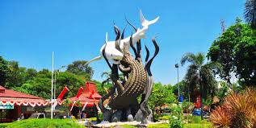

Surabaya
Surabaya dikenal dengan julukan Kota Pahlawan karena Pertempuran 10 November 1945, yaitu sejarah perjuangan Arek-Arek Suroboyo (Pemuda-pemuda Surabaya) dalam mempertahankan kemerdekaan bangsa Indonesia dari serangan sekutu.
Surabaya juga sempat menjadi kota terbesar di Hindia Belanda dan menjadi pusat niaga di Nusantara yang sejajar dengan Hong Kong dan Shanghai saat itu. Menurut Bappenas, Kota Surabaya adalah satu dari empat kota pusat pertumbuhan di Indonesia, bersama dengan Medan, Jakarta, dan Makassar.
